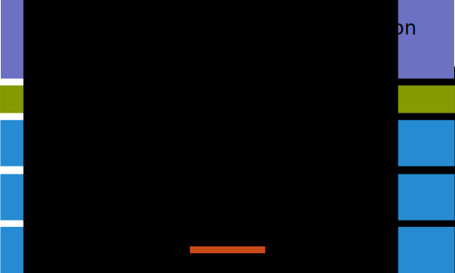
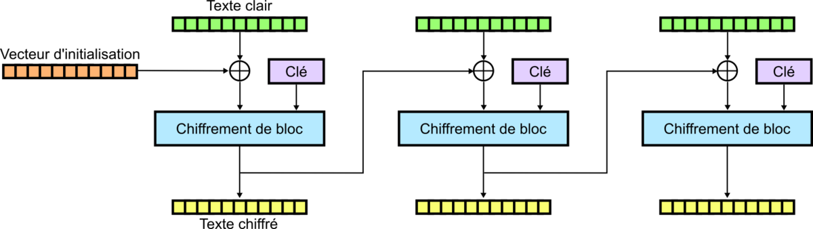
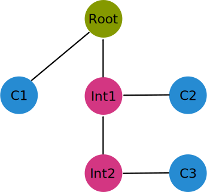

Back To Basics
SSL
/
TLS
@fcabestre
Repères historiques
1994 - Secure Socket Layer 1.0
1995 - Secure Socket Layer 2.0
1996 - Secure Socket Layer 3.0
1999 - Transport Layer Security 1.0
2006 - Transport Layer Security 1.1
2008 - Transport Layer Security 1.2
Objectifs
Authentification
Confidentialité
Intégrité
Le principe
Niveau transport

Assemblage cryptographique
Bibliothèques : OpenSSL, GNU TLS, JSSE...
Briques de base
Hachage
Empreinte taille fixe
c558784f0690ab20ede545f0c9c65ce3c5717898
MD5
SHA1, SHA256...
Chiffrement symétrique
Clef partagée
Rapide
3DES
AES128, AES256, AES512
Mode d'opération
Chiffrement de blocs consécutifs

ECB
CBC, EFB, OFB...
Chiffrement assymétrique
Clef privée
Clef publique
Lent
RSA, DSA
ECDSA
Échange de clefs
Diffie-Hellman
Man in the middle
Le protocole
Certificats
Enrobage
Méta données
Cryptographiquement signé
Établissement de la session
La confiance
Certificats auto-signés
Cryptographiquement signé
Chaînes de certification
Tiers de confiance

Qui surveille les surveillants ?
Autorités de certification
Certificat compromis
Liste de révocations
Online Certificate Status Protocol
Conclusion